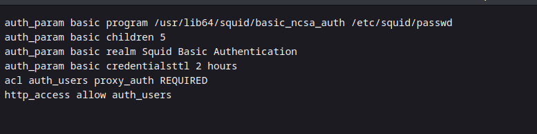
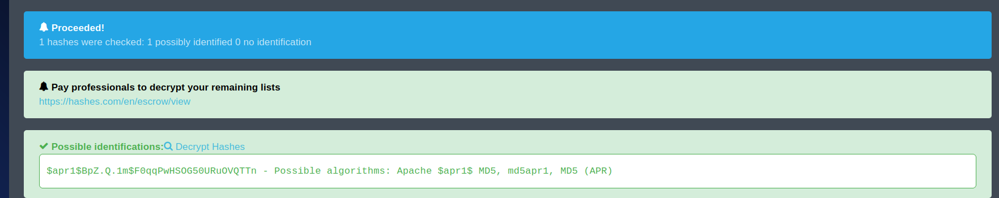

gobuster found /admin and /etc
3 potential users on system. Alex mentions squid proxy, potential insecure config files and a backup archive. Try ssh brute force with a users list.txt. No luck yet.
some notes on the source code
Found archive.tar using one of the links
Readme file displays...
Researched the link and found this, so expecting to extract something
the other subdirectory displays this...
found a passwd file and conf, password needs to be cracked,

auth_param basic program /usr/lib64/squid/basic_ncsa_auth /etc/squid/passwd
auth_param basic children 5
auth_param basic realm Squid Basic Authentication
auth_param basic credentialsttl 2 hours
acl auth_users proxy_auth REQUIRED
http_access allow auth_users
music_archive:$apr1$BpZ.Q.1m$F0qqPwHSOG50URuOVQTTn.
Used www.hashes.com to find hash

Searched hashcat wiki for the hash type.
Running hashcat to crack the hash.
Found the password!
sq**********
Also, had tried to do steghide and stegseek crack on the piano.jpg found on website. But no luck.
extracted the archive using Borg, which reveals Alex's folder.
Did some searching through each folder
found this file in Desktop
Found this note.txt in Documents which contained Alex's password
alex:S********* = SSH CREDS
found the first flag in user.txt
Also found some files in the Music folder
Check which commands can be run as sudo - a particular sh file in the /etc folder
cat the files in the /etc/mp3backup folder
cat the file which can be run as sudo
backup.sh has 554 file permissions, so chmod it to 777.
used revshells.com to get a bash script, which I pasted above the file content.
started nc listener on port 4444
executed the file with sudo permissions
Oh yeah! Got root.
Cat out the root flag